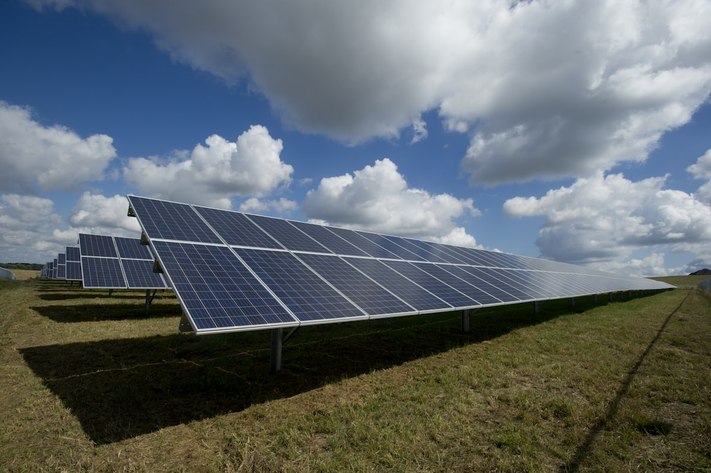
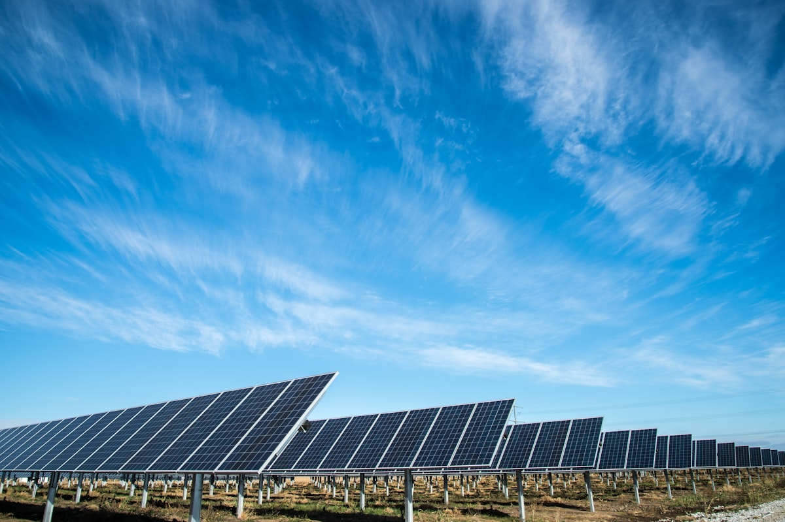
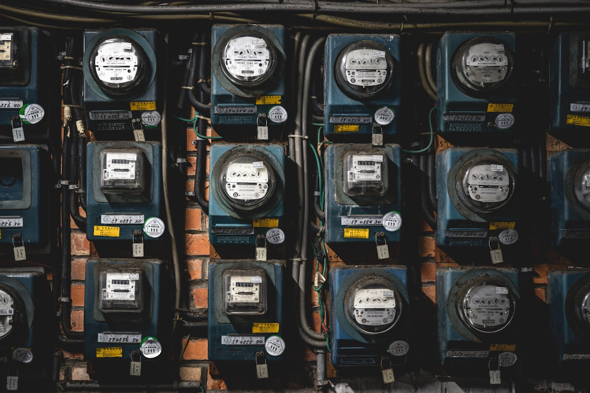

Стратегічний документ планування, що визначає шлях територіальної громади до енергоефективності, скорочення викидів парникових газів та переходу до відновлюваних джерел енергії — обов'язковий за енергетичним законодавством України та узгоджений із зобов'язаннями Угоди мерів ЄС.
Регулюється Законом України «Про енергетичну ефективність» № 1818-IX · Директивою ЄС 2012/27/EU про енергоефективність · Угодою мерів з питань клімату та енергії — базова методологія IPCC 2006.

Муніципальний енергетичний план (МЕП) — це стратегічний управлінський документ, через який орган місцевого самоврядування бере на себе зобов'язання скорочувати викиди CO₂ та підвищувати енергетичну стійкість у всіх секторах своєї юрисдикції — будівлях, транспорті, вуличному освітленні, водоочищенні та місцевих підприємствах.
План ґрунтується на базовій інвентаризації викидів (БІВ) — поглавному (за секторами) кількісному визначенні енергоспоживання громади та пов'язаних викидів парникових газів — на основі якого визначаються цілі скорочення, заходи з ефективності та інвестиції у відновлювану енергетику.
В Україні МЕП є частиною національної реформи енергоефективності, узгодженою із зобов'язаннями Договору про заснування Енергетичного Співтовариства ЄС. Він також є основним інструментом, через який муніципалітети беруть участь у глобальній ініціативі «Угода мерів з питань клімату та енергії», отримуючи доступ до технічної допомоги та програм фінансування ЄС.
Юридичною основою є Закон України «Про енергетичну ефективність» № 1818-IX та Національний план дій з енергоефективності. Методологія впровадження відповідає Директиві ЄС 2012/27/EU та рекомендаціям Угоди мерів на основі методології інвентаризації IPCC 2006.
МЕП входить у взаємопов'язану ієрархію європейських та національних енергетичних зобов'язань — кожен рівень є обов'язковим для нижчих.
Кліматична нейтральність до 2050 · Директива 2012/27/EU · Директива про відновлювану енергію
Україна — Закон № 1818-IX · Зобов'язання Договору про Енергетичне Співтовариство
Обласний рівень · Галузеві енергетичні програми та міжгромадська координація
Рівень громади · Базова інвентаризація БІВ, цілі скорочення, інвестиційна програма
Учасники Угоди мерів зобов'язуються звітувати про прогрес кожні два роки за стандартизованою методологією моніторингу ЄС.
Розробляється за участю енергоаудиторів, технічних експертів та з громадськими консультаціями — план повинен ґрунтуватись на перевірених даних споживання та досяжних місцевих цілях.
МЕП формально приймається радою громади та подається до секретаріату Угоди мерів або національного енергетичного органу для реєстрації.
МЕП перетворює глобальні кліматичні зобов'язання на конкретні зобов'язання масштабу громади — з визначеними цілями, циклами перегляду та вимогами щодо публічної звітності.
Прийнятий МЕП є основним документом, що дає українським муніципалітетам право на доступ до технічної допомоги ЄС, співфінансування Європейського інвестиційного банку та двосторонніх програм енергоефективності з Німеччини, Швеції та інших країн-членів ЄС.
Без відповідного МЕП громади позбавлені доступу до програм підтримки Угоди мерів та не можуть подавати заявки на гранти NEFCO, ЄБРР чи USAID на енергетичну інфраструктуру, для яких формальна місцева енергетична стратегія є попередньою умовою.
Jureco готує МЕП одночасно відповідно до українських регуляторних вимог та технічних стандартів Угоди мерів — щоб громади отримували право на участь у внутрішніх програмах та грантових механізмах ЄС за допомогою одного документа.
Кожен муніципальний енергетичний план будується навколо цих базових аналітичних та стратегічних блоків — кожен ґрунтується на перевірених місцевих енергетичних даних.
Поглавне (за секторами) кількісне визначення загального енергоспоживання громади та пов'язаних викидів CO₂ — охоплюючи муніципальні будівлі, вуличне освітлення, водну інфраструктуру, транспорт та місцеву промисловість — встановлюючи перевірену базову лінію, від якої вимірюються всі цілі.
Пріоритезований план термоізоляції, заміни вікон, модернізації систем опалення та автоматизації будівель у муніципальних об'єктах — школах, адміністративних офісах, культурних центрах, спортивних об'єктах — з аналізом витрат і вигод для кожного об'єкта.
Оцінка місцевого потенціалу відновлюваної енергії — сонячні панелі на дахах, малі вітроустановки, біомаса з сільськогосподарських відходів, міні-ГЕС — та пріоритезована інвестиційна програма для об'єктів відновлюваної енергетики у власності громади з моделями фінансування.
Заходи зі скорочення транспортних викидів: перехід громадського автопарку на електротранспорт, велоінфраструктура, оптимізація управління дорожнім рухом, заміна вуличного освітлення на LED у всій дорожній мережі.
Комплексна матриця фінансування для всіх заходів МЕП — узгодження кожного заходу з прийнятними джерелами фінансування: державне співфінансування, гранти ЄС, ЕСКО-контракти, зелені облігації та двосторонні донорські програми.
Визначені KPI для кожного сектору, відповідальні посадовці, протоколи збору даних та дворічна моніторингова інвентаризація викидів (МІВ) для відстеження прогресу — що подається до Угоди мерів та публікується для громадського доступу.
«Енергоефективність — це не абстрактна кліматична ціль. Для муніципалітету це пряме скорочення бюджетних витрат — і найнадійніша інфраструктурна інвестиція, доступна сьогодні.»Jureco
Збір та перевірка даних про енергоспоживання з усіх муніципальних секторів — комунальні рахунки, дані про паливо, транспортні дані — та розрахунок повної базової лінії CO₂ громади за методологією IPCC 2006, сумісною з вимогами Угоди мерів.
Підготовка повного муніципального енергетичного плану — постановка цілей, секторальні програми дій, інвестиційний план, матриця фінансування, система моніторингу — оформлена відповідно до українських регуляторних вимог та стандартів подання Угоди мерів.
Визначення всіх застосовних фінансових інструментів для кожного заходу МЕП — гранти ЄС, NEFCO, ЄБРР, державні фонди енергоефективності, ЕСКО-контракти — з аналізом прийнятності та підтримкою подання заявок для пріоритетних проєктів.
Організація та документування громадських слухань та експертних консультацій, необхідних перед прийняттям МЕП радою громади — відповідно до вимог партисипативного управління.
Підготовка моніторингових інвентаризацій викидів (МІВ) кожні два роки — вимірювання фактичного прогресу щодо цілей МЕП, виявлення розривів у реалізації та подання відповідних звітів секретаріату Угоди мерів та національним органам.

Прийняття МЕП не є одноразовим актом — воно започатковує юридично обов'язковий цикл реалізації, моніторингу та дворічної звітності перед національними органами та міжнародною мережею Угоди мерів.
Кожні два роки органи місцевого самоврядування повинні готувати моніторингову інвентаризацію викидів (МІВ) — повний перерахунок викидів громади у всіх секторах — та порівнювати його з базовою лінією для вимірювання фактично досягнутих скорочень CO₂.
Якщо моніторинг виявляє суттєві відставання, громади повинні прийняти програми коригувальних дій. Якщо місцеві умови суттєво змінюються — нові промислові об'єкти, зростання населення, зміни системи опалення — може знадобитися часткова чи повна ревізія МЕП.
Jureco забезпечує повний цикл підтримки протягом усього строку дії плану — від прийняття до кожного дворічного циклу моніторингу — щоб громади залишались у відповідності без створення внутрішньої спеціалізованої спроможності.

Учасники Угоди мерів з відповідним, актуальним МЕП та поданими звітами моніторингу отримують пріоритетний доступ до технічної допомоги ЄС, співфінансування європейських фінансових установ та двосторонніх грантів на енергоефективність. Громади, що відстають у звітності, ризикують зупиненням участі в програмі та втратою права на фінансування.
Відповідно до Закону України «Про енергетичну ефективність» № 1818-IX, органи місцевого самоврядування зобов'язані розробляти програми енергоефективності для територій своєї юрисдикції. Для громад-учасниць Угоди мерів МЕП є прямим і обов'язковим зобов'язанням, взятим у момент приєднання. Крім того, доступ до більшості програм фінансування енергоефективності ЄС та міжнародних установ вимагає наявності відповідного місцевого енергетичного плану як попередньої умови. На практиці будь-яка громада, що прагне отримати грантове фінансування ЄС на термомодернізацію будівель, відновлювану енергетику чи електрифікацію транспорту, повинна мати чинний МЕП.
Угода мерів з питань клімату та енергії — найбільший у світі рух місцевих та регіональних органів влади, що добровільно беруть на себе кліматичні та енергетичні зобов'язання. Для українських муніципалітетів участь в Угоді надає прямий доступ до технічної допомоги ЄС через механізм ELENA, право на співфінансування Європейського інвестиційного банку та двосторонню підтримку країн-членів ЄС. Україна формально інтегрована в рамки Угоди, і українські муніципалітети, що приєднуються, отримують ті ж права, що й підписанти-члени ЄС. МЕП є основним документом, необхідним для формалізації та підтримання цієї участі.
Рекомендації Угоди мерів пропонують використовувати 1990 рік як базовий, якщо наявні достовірні дані — оскільки це узгоджується з кліматичними протоколами ЄС та IPCC. Якщо дані 1990 року неможливо перевірити, прийнятним є найближчий рік, для якого існують повні й документально підтверджені дані енергоспоживання. Підхід Jureco передбачає ретельний аудит даних для визначення найбільш обґрунтованого базового року для кожної громади з подальшою побудовою перевіреної базової інвентаризації викидів на основі комунальних записів, даних про споживання палива та транспортної статистики.
МЕП повинен бути узгоджений з Комплексним планом розвитку громади, планами землекористування та генеральним планом транспорту — оскільки вибір майданчиків для відновлюваної енергетики, пріоритети термомодернізації будівель та заходи мобільності перетинаються з рішеннями просторового планування. Він також повинен узгоджуватись з Регіональною енергетичною стратегією. Jureco проводить аналіз узгодженості між документами в межах розробки МЕП, щоб забезпечити відповідність та уникнути конфліктів з наявними документами планування — що є частою причиною заперечень ради під час прийняття.
Невчасне подання дворічної моніторингової інвентаризації викидів призводить до перегляду статусу громади в Угоді мерів. Після пільгового періоду учасники, що не звітують, можуть бути виключені з Угоди — втрачаючи доступ до програм фінансування ЄС та технічної допомоги. На внутрішньому рівні невиконання звітності про реалізацію програми енергоефективності створює ризики невідповідності за Законом «Про енергетичну ефективність». Jureco рекомендує встановити внутрішній календар моніторингу з моменту прийняття МЕП і пропонує послугу річного супроводу для збору даних, розрахунку МІВ та своєчасного подання звітів.
Зв'яжіться з нашим інженерним відділом, щоб отримати негайний діагностичний аналіз ваших структурних вимог відповідно до чинного екологічного законодавства.